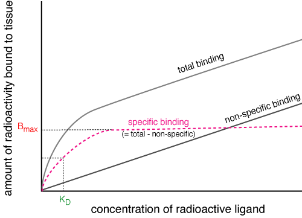
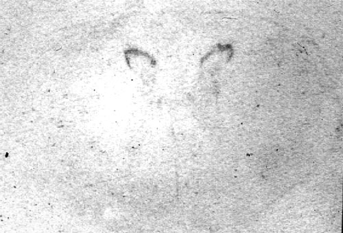
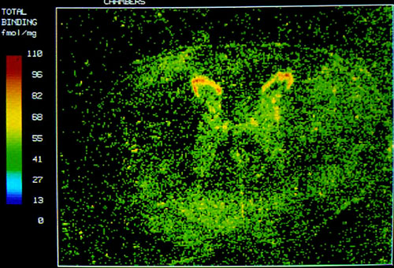
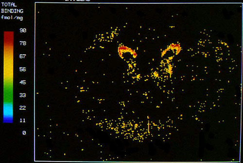

The binding of drugs to receptors, and their displacement by other drugs, are usually measured using radioactive agonists or antagonists. The tissue is homogenised in a test tube, washed and centrifuged so that only cell membranes (you hope) are left. The tissue is exposed to the radioactive drug and allowed to incubate so that the drug binds to the receptors, excess drug is washed off and the radioactivity measured. Most hot ligands are labelled with tritium, which is a b emitter: the homogenised tissue with drug bound to its receptors is put into a vial of fluid which scintillates when a b particle is emitted and the flashes are counted by a machine.
A control group is subjected to the same procedure but the radioactive drug is displaced by a non-radioactive (cold) agonist or antagonist (as appropriate) before washing. Any radioactivity measured in this group is assumed to be nonspecific binding to lipids etc, so the two radioactive measurements are subtracted to get the specific binding. The specific binding must be to receptors, ie proteins, so the protein concentration is measured so that the binding can be quantified.
These sort of binding experiments show the Bmax which gives an indication of the number of receptors in the tissue, and the dissociation constant, KD, which is the concentration of drug which occupies 50% of the receptors. A variation on this technique is to use a slice of tissue on a microscope slide rather than homogenised tissue (autoradiography). This allows the site of the receptors to be pinned down. Another variation which can be used in patients is positron emisson tomography where a drug containing a positron emitting isotope is given to the patient and radioactivity is visualised by various techniques. This is particularly useful for showing how disease affects receptor numbers.
Binding experiments do not tell us anything about receptor function: patch clamping in excitable tissue is a common way of assessing what happens when a drug binds to an ionotropic receptor or to a receptor coupled to an ion channel. A small patch of membrane containing the receptor and ion channel is sucked onto the end of a pipette and a constant voltage maintained across it. When the channel opens, ions go through, creating a small current (picoAmps). If you have the pipette connected to a very sensitive amplifier, you can measure these currents. Any sort of magnetic or electric field moving near your wires can produce very lifelike pictures.
Drugs can be applied to the whole cell, or put in the saline inside the pipette so that they only affect the channel being examined. These experiments can give information on channel kinetics and receptor effector coupling, but are very prone to artefacts.

Saturation curve for a radioligand binding experiment.
|  | Autoradiograph of a section of horse cervical spinal cord. Dark areas show increased radioactivity from 3H clonidine binding to α2 receptors in the substantia gelatinosa. |
|  | Computerised autoradiograph showing colourised total binding. |
|  | Computerised autoradiograph showing specific binding (total binding minus non-specific binding). |